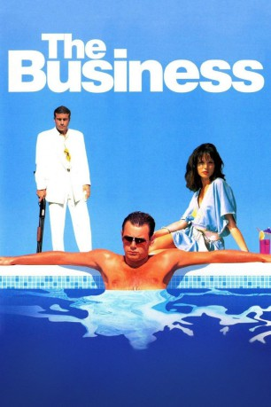

#7658 The Business - Schmutzige Geschäfte
Alternativ: The Business
 
 IMDB-Wertung: 6.7 / 10
IMDB-Wertung: 6.7 / 10  Metascore: 0
Metascore: 0 
Frankie decides he's had enough with his life as a street thug living on a South London estate, and jets off to spain where he meets big time businessman Charlie, who's currently running the hottest bars in the land and also a South London bank robber and drug kingpin. From here on in Frankie signs up to a lifetime of crime, women and drugs and works his way from the bottom to the top of the Spanish cocaine empire with Charlie and Fellow bank robber and drug kingpin Sammy who does not give Frankie the best reception.
Jahr: 2005
Dauer: 91 Minuten
FSK: 18
Land: England Studio: Concorde Home EntertainmentTonspuren: DTS - ,
Untertitel: Deutsch,
Auflösung: 1080p (1920x816) Größe: 8028 MB
Genre: Thriller, Drama, Krimi
Regisseur: Nick Love
Drehbuch: Zhangke Jia
Soundtrack: Rick James
Darsteller:
 Danny Dyer als Frankie
Danny Dyer als Frankie Tamer Hassan als Charlie
Tamer Hassan als Charlie Geoff Bell als Sammy
Geoff Bell als Sammy Georgina Chapman als Carly
Georgina Chapman als Carly Roland Manookian als Sonny
Roland Manookian als Sonny Camille Coduri als Nora
Camille Coduri als Nora Philip Howard als Clubber , uncredited
Philip Howard als Clubber , uncredited- Eddie Webber als Ronnie
- Adam Bolton als Danny
- Linda Henry als Shirley
- Arturo Venegas als Mayor
- Martin Marquez als Pepe
- Andy Linden als Joe
- Sally Watkins als Mum
- Eduardo Duro als Carlos
- Tracy Kirby als Laura
- Alexis Coello Montena als Columbian 1
- Rachid Alihealni als Columbian 2
- Andy Parfitt als Andy
- Daniel Naylor als Danny 2
- Michael Maxwell als Jimmy
- Tommaso Pavore als Driver / Italian Driver
- Fernando Carrasco Roman als Waiter
- Steve Burns als Young Man
- Sylvie Arnone als Maid
- Joanna Thompson als Girl
- Paul Burns als The Chef
- Alejandra García als Woman
- Andrew Shukin als The Dutch
- Frank Groen als The Dutch
- Cas en Mar als The Dutch
- Walter Rico als The Dutch
- Alfonso Guerra als Body Guard
- José López Rodríguez als Body Guard
- Alberto Peregrina García als Pretty Boy
- Ibra Habbools Sanchez als Algerian
- Zara Ford als Jacuzzi Girl
- Alberto Castillo als Squat Druggie
- Peter Prestage als Squat Druggie
- Zippy Alonso Mendoza als Squat Druggie
- Herardo Edil Manrique Riera als Police
- Francisco Extremera-López als Police
- Marti Roca Hertlein als Police
- Marcelo Dabiel Yornet als Police
- Twogeese Macfarlane als Police
- Canido Massi als Police
- Dino Fritz als Moroccan Boy
- Maurico Manrique als Moroccan Boy
- Olimaiz Anass als Moroccan Boy
- Olimaiz Achraf als Moroccan Boy
Datei: X:\FSK18-2000-2009\Business - Schmutzige Geschäfte, The (2005, FSK18, 1920x816).mkv seit 29.11.2017
Festplatte: FSK18
 Es gibt insgesamt 106 Filme in der Gruppe 'FSK18-2000-2009'
Es gibt insgesamt 106 Filme in der Gruppe 'FSK18-2000-2009'